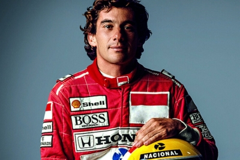

A HISTÓRIA DO ESPORTE
Nos tempos antigos, a atividade física era diferente do que conhecemos hoje. Portanto, foram conceituados como exercícios pré-exercício. Os esportes têm uma longa história e são praticados em todo o mundo. Do jogo original ao futebol moderno, os esportes evoluíram ao longo de milhares de anos para os grandes jogos modernos jogados por milhões de pessoas em todo o mundo. Por volta de 4000 aC, as pessoas na China começaram a praticar ginástica. No Egito, registros de praticantes de esgrima, salto e dardo foram encontrados por volta de 1450 aC. No entanto, o esporte só foi levado a sério na Grécia antiga.Os jogos, realizados na cidade grega de Olímpia por mais de 1.200 anos, foram um centro de atividades esportivas antigas, com ênfase no atletismo. Por volta de 27 aC, foi a vez dos romanos, que desenvolveram uma competição esportiva organizada que incluía corridas de bigas e as famosas competições de gladiadores. Na Idade Média, a história do esporte tomou outro rumo. Práticas de cuidados físicos, incluindo exercícios, foram deixadas de lado, pois o interesse geral se concentrava na igreja. Portanto, é um horário de pico para atividade física no momento. Entre os séculos 17 e 18 surgiram vários clubes esportivos, principalmente na América, onde havia mais imigrantes ingleses.
OS ESPORTES NO BRASIL
Também no Brasil, a história do esporte deve muito aos ingleses, que praticaram o primeiro esporte registrado em terras tupiniquins: o turf, uma forma de corrida de cavalos, ainda em 1810 o Rio de Janeiro o fez. No final do século XIX, São Paulo viu seus primeiros clubes de futebol, como o Germânia e o Atlético Clube. Na virada do século, vários clubes se espalharam rapidamente pelo país, levando à criação da Confederação Brasileira de Desportos (CBD) em 1914 para formar uma seleção e jogar contra a Argentina. A federação marca a história do esporte brasileiro, e com o desenvolvimento do futebol, a CBD ganhou relevância nacional e internacional, conquistando as copas de 1958, 1962 e 1970. Em 1979, para acomodar a FIFA, a CBD foi dissolvida e passou a se chamar Confederação Brasileira de Futebol (CBF), com foco apenas no esporte. Com a consolidação da alta sociedade, o esporte seguiu linhas de elite, apenas aqueles com alto poder aquisitivo ingressaram nos maiores clubes onde as estrelas estavam em campo. Quer seja um hobby ou uma profissão, o desporto continua a ser uma atividade que não está ao alcance de uma grande percentagem da população.

No entanto, como resultado de ações governamentais, os graus de educação física começaram a ser ministrados em escolas públicas e privadas. É preciso lembrar que o foco naquela época não era torná-lo acessível, mas cuidar dos corpos de crianças e jovens que iriam desenvolver lares europeus padrão.
De fato, mesmo que a motivação não seja uma base importante para o desenvolvimento dos alunos, todos eles têm a oportunidade de vivenciar a atividade física no ambiente escolar. Isso, em última análise, promove o interesse pela atividade física e oferece oportunidades para aqueles que desejam seguir essa carreira.
Hoje, o esporte no Brasil é organizado por federações nacionais que orientam as formas de desenvolvimento praticadas e fortalecem a atuação profissional daqueles que perseguem esse sonho.
Como resultado, o treinamento de alto nível melhorou e os atletas de hoje são apoiados por várias agências, como governos e patrocinadores. O Brasil participou dos Jogos Olímpicos pela primeira vez em 1920. Desde o início de sua história olímpica, a delegação brasileira já enviou milhares de atletas para mais de 2.000 instalações olímpicas. Em 2016, o Rio de Janeiro sediou os Jogos Olímpicos de Verão de 2016, tornando-se a primeira cidade sul-americana a sediar o maior evento esportivo do mundo. A maior delegação brasileira da história com 65 atletas de 28 modalidades. O país conquistou um total de 19 medalhas, das quais 7 são de ouro.